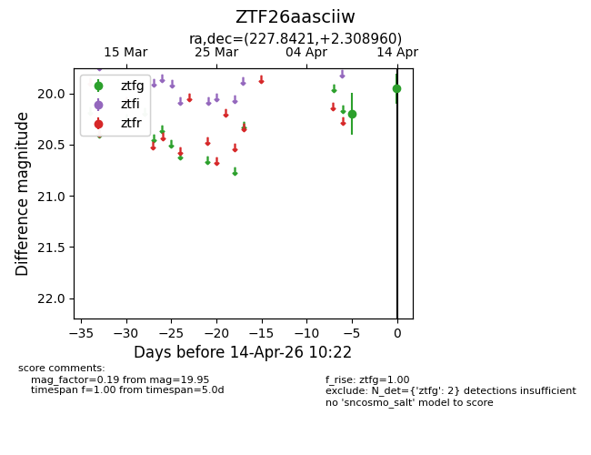
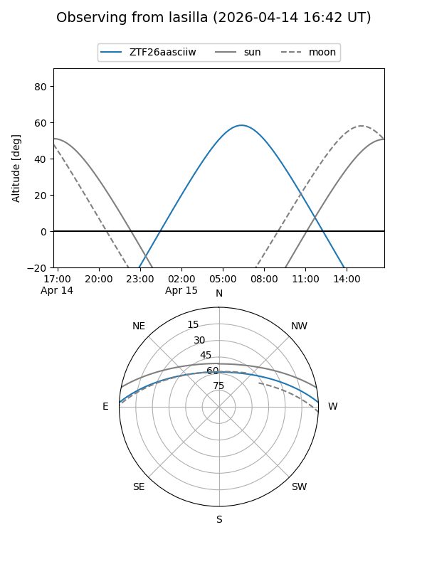
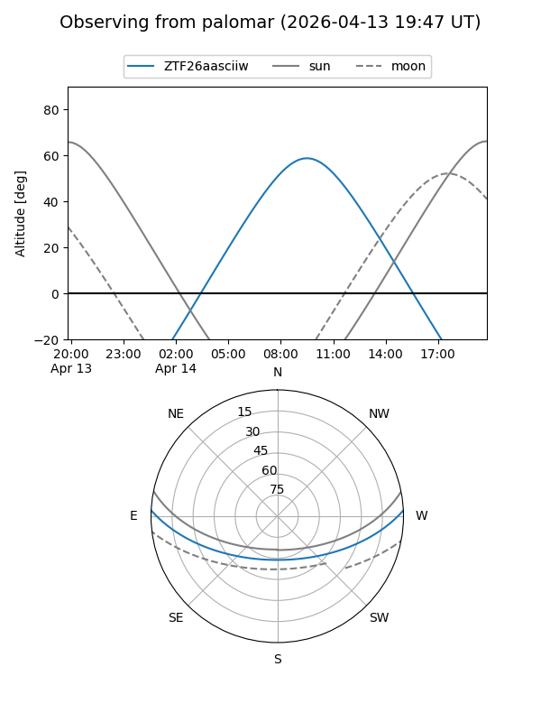

ZTF26aasciiw
Target ZTF26aasciiw at 2026-04-14 10:32
Aliases and brokers:
FINK: link
Lasair: link
ALeRCE: link
alt names
ZTF26aasciiw (ztf,fink_ztf)
Coordinates:
equatorial (ra, dec) = 227.8421,+2.30896
equatorial (HMS+DMS) = 15:11:22.09,+02:18:32.25
galactic (l, b) = (2.4320,+48.32853)
Flags:
Photometry:
last ztfg=19.95
2 ztfg detections
Lightcurve

Visibility


Additional plots